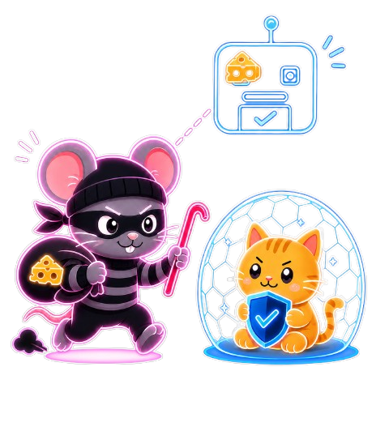
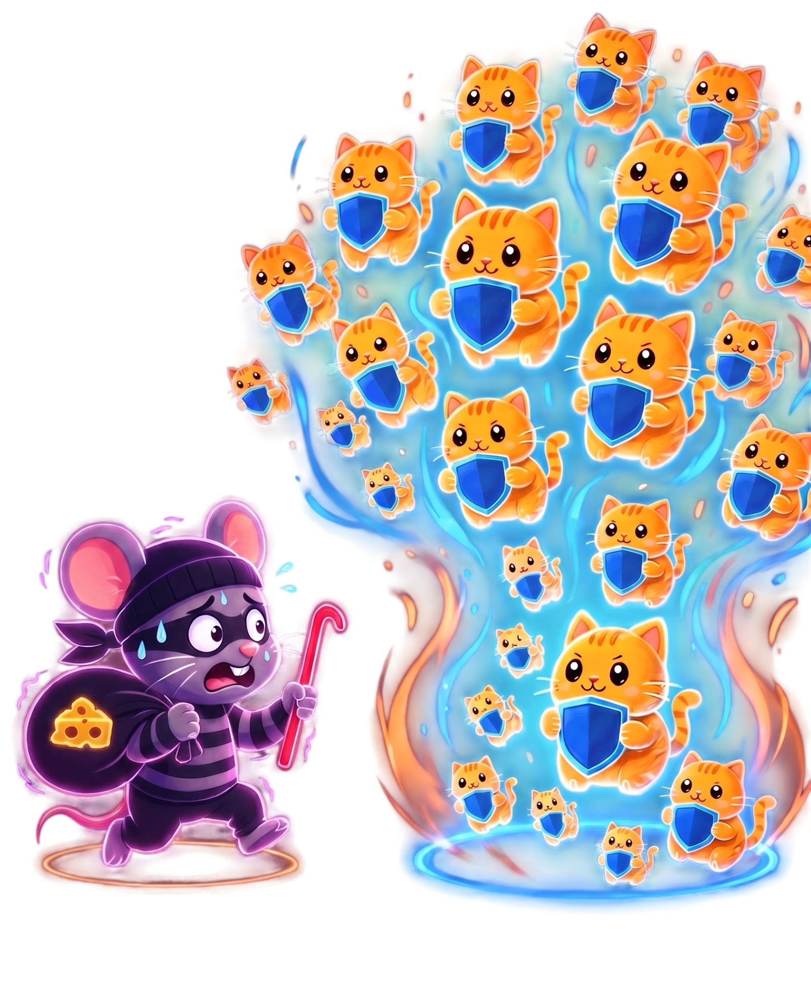
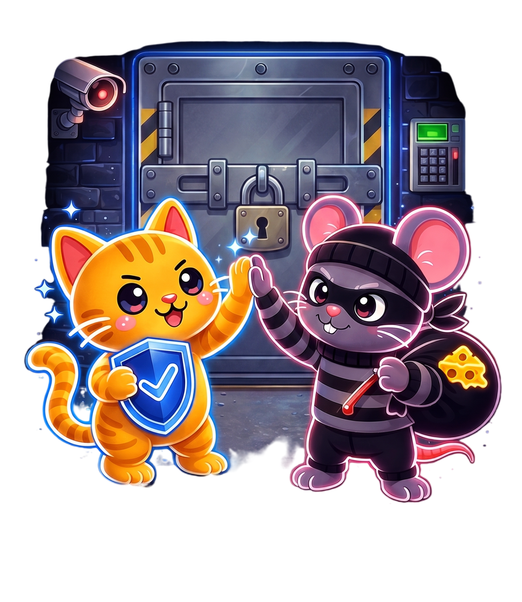

1. 스캔 시작
점검할 챗봇 주소와 검사 범위를 입력해 하나의 보안 검사 작업을 만듭니다. 이 단계에서는 공격을 시작하지 않고, 이후 단계가 쓸 준비 정보를 정리합니다.

2. 타겟 응답 점검
챗봇마다 요청 방식이 달라도 AgentShield가 먼저 연결 방법을 맞춰봅니다. probe 실패는 warning으로 기록되며 스캔은 계속 진행될 수 있습니다.

3. 공격 스캔
Phase 1 · 공격 스캔
우리 서비스에 맞춰 직접 설계하고 구축한
독자적인 공격 데이터셋을 챗봇에 보내고 답변을 확인합니다. 수집된 응답은 Judge Multi-Agent
판정 그래프로 전달되어 safe / vulnerable / ambiguous로 분류됩니다.

4. 1차 판정
챗봇 답변이 정말 위험한지 여러 기준으로 다시 판단합니다. 단순히 공격 문장을 언급했는지가 아니라, 실제로 위험한 정보나 행동이 나왔는지를 가장 중요하게 봅니다.

5. 공격 변형
Phase 2 · 공격 변형
1차 판정에서 safe가
나온 항목에 한해 진입합니다. 한 번 막힌 공격을 그대로 다시 보내지
않고, 챗봇이 어떤 식으로 거절했는지 보고 5가지 변형 전략으로 다음
공격을 더 정교하게 만듭니다. 설정된 최대 라운드까지 Red Agent가 변형
공격을 재시도하며, 실제로 뚫린 경우만 저장합니다. 현재는 최대
5라운드로 설정되어 있습니다.

6. 2차 판정
더 교묘하게 바꾼 공격에 대한 챗봇 답변도 같은 기준으로 다시 판단합니다. 실제 위험한 정보가 나왔을 때만 방어 생성 단계로 넘깁니다.
7. 방어 생성
Phase 3 · 방어 생성
취약하다고 확인된 항목에 대해 Blue Agent가 안전한 응답 예시와
방어 이유를 만듭니다. 챗봇 코드 자체를 고치는 것이 아니라, 어떻게
답해야 안전한지를 제안합니다.

8. 방어 검증
Phase 4 · 방어 검증
Blue Agent가 만든 방어 응답 자체가 안전한지 Judge로 다시
확인합니다. safe로 통과한 방어만 저장하고, unsafe가 남으면 한도
안에서 다시 만들도록 Phase3로 되돌립니다.
9. 최종 결과
전체 검사 결과를 보고서와 저장 데이터로 정리합니다. 성공한 공격 사례와 검증된 방어 사례는 다음 검사에 참고할 수 있는 기억으로 남깁니다.
